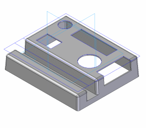

This tutorial demonstrates a typical workflow for using a sketch to model a part with Solid Edge. It demonstrates the advantages of drawing several profiles in one sketch, and using those profiles later to construct other features.
This is an intermediate tutorial. You might find it easier to follow if you first complete the Introduction to Part Modeling tutorial.
Estimated time to complete: 45 minutes
